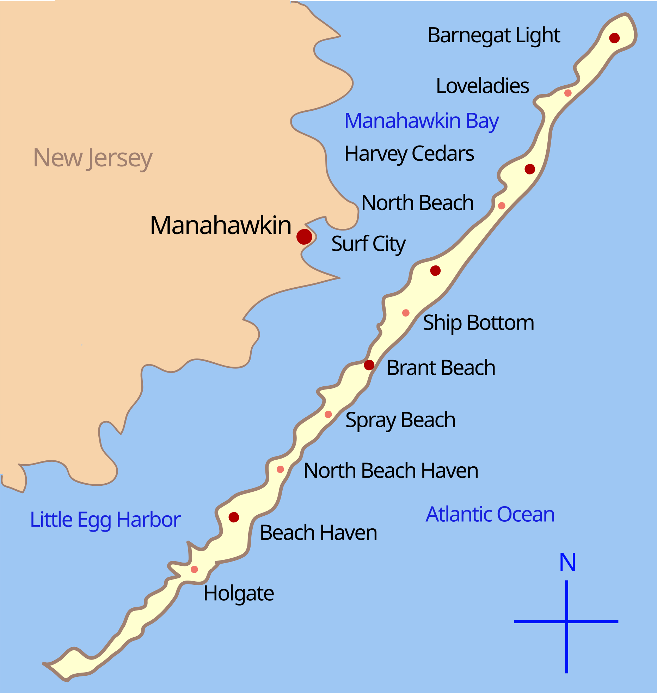
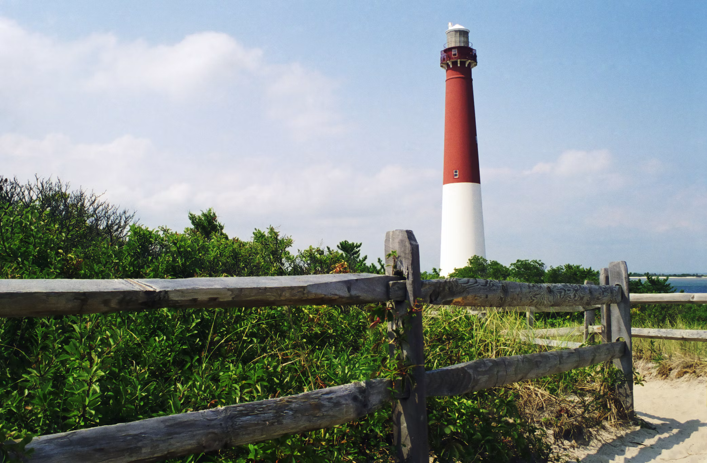

Living LBI
LBI has a variety of attractions and things to do. From museums to mini golf, parasailing, and delicious restaurants, LBI has something for everyone. History and Culture Tuckerton Seaport & Baymen’s Museum Learn about the history, art, and environment of Barnegat Bay and Pinelands Also offers boat rides and scenic tours Address: 120 W Main St, Tuckerton, NJ 08087 Phone: 609-296-8868 New Jersey Maritime Museum Learn about maritime history and view artifacts from the entire state of New Jersey Located in Beach Haven Address: 528 Dock Rd, Beach Haven, New Jersey, 08008 Phone: 609-492-0202 Recreation Thundering Surf Waterpark Waterpark with a mini golf course for all ages, with body slides, racer slides, a lazy river, and more Open seasonally during summer Address: 300 Taylor Ave, Beach Haven, NJ 08008 Phone: 609-492-4200 South End Surf N Paddle Kids surf camp, surf lessons for kids and adults Stand-up paddleboard tours available as well Address: 220 S Bay Ave, Beach Haven, NJ Phone: 609-492-8823 The Boatyard Doubling as a spot for food and drinks and a recreation destination, the Boatyard is a spot for casual meals, lawn games, and great views of the bay. Docking for boats is available Address: 2304 E Bay Ave, Manahawkin, NJ 08050 Phone: 609-494-1371 Causeway Marina Boat Rentals Skiff, pontoon, and kayak rentals Baithouse with fishing essentials also available Address: 2304 E Bay Ave, Manahawkin, NJ 08050 Phone: 609-494-1371 LBI Parasail Enjoy the views of LBI and go parasailing 8am – 8pm, Memorial Day through Labor Day Address: Lighthouse Marina, W 6th St, Barnegat Light, NJ 08006 Phone: 609-361-6100 Fantasy Island Amusement park located in Beach Haven Rides, arcade, and fun for the whole family Address: 750 N Bay Ave, Beach Haven, NJ 08008 Phone: 609-492-4000 Shopping Bay Village 23 shops and eateries including apparel, pizza, gifts, and more Near Fantasy Island and neighboring waterpark Address: 830 N Bay Ave, Beach Haven, NJ United States 08008 Ron Jon Surf Shop The “Original” Ron Jon Surf Shop, which opened in 1961 A must-see destination for visiting LBI, with clothes, surfboards, and everything you need for the beach Address: 201 9th and Central Avenue, Ship Bottom, NJ 08008 Phone: 609-494-8844 Farias Surf Shop An authentic surf shop with products from brands like RVCA and Jetty Locals recommend Farias as one of the best places to shop on the island Address: 2800 Long Beach Blvd, Ship Bottom, NJ 08008 Phone: 609-494-7368 Surf City 5 & 10 Another local favorite, the best place to go on any rainy day Toys, taffy, puzzles, and all the fun items to keep you occupied Address: 411 Long Beach Blvd, Surf City, NJ 08008 Phone: 609-494-1872 B & B Department Store Hidden gem of clothes and beach gear located next to Ron Jon Great products without all of the tourist traffic Address: 901 Central Ave, Ship Bottom, NJ 08008 Phone: 609-361-0760 Restaurants Wally’s An island favorite, serving breakfast, lunch, and dinner American comfort food, high quality, fair price, casual dining, BYOB Address: 712 Long Beach Blvd, Surf City, NJ 08008 Phone: 609-494-1667 Panzone’s The best pizza on LBI, two seasonal restaurants, one in Beach Haven, one in Surf City Surf City Address: 2117 Long Beach Blvd, Surf City, NJ 08008 Surf City Phone: 609-494-1114 Beach Haven Address: 1106 N Bay Ave, Beach Haven, NJ 08008 Beach Haven Phone: 609-492-5103 Neptune’s A dining, market, and grocery location all in one Delicious cheesesteaks, fresh seafood, premium meats, local ingredients Address: 8014 Long Beach Blvd, Harvey Cedars, NJ 08008 Phone: 609-494-2619 Russo’s The best Italian food on the island, BYOB Small dining area, reservations usually required, worth the wait Address: 1415 Long Beach Blvd #3, Ship Bottom, NJ 08008 Phone: 609-342-1506 Salt Kitchen and Bar (Hotel LBI) Upscale dining with food from local farmers and fishermen Reservations required, outdoor seating available, premium price point Address: 350 W 8th St, Ship Bottom, NJ 08008 Phone: 609-991-8001 Scojo’s Eatery Popular among locals and tourists, family-friendly Breakfast and lunch only, casual spot, outdoor seating available Address: 307 Long Beach Blvd, Surf City, NJ 08008 Phone: 609-494-8661 Bagels and Beyond Multiple locations, delicious bagels, sandwiches, and pastries Open from morning to afternoon, seasonally Address (Surf City Location): 1616 N Long Beach Boulevard, Surf City, NJ 08008 Phone (Surf City Location): 609-494-4848 Burger25 Casual, family-friendly restaurant with burgers, sides, and milkshakes Affordable price point; indoor seating fills up quickly Address: 1915 Long Beach Blvd, Ship Bottom, NJ 08008 Phone: 609-879-2525 Surf City Hotel Steps from the beach; acts as a hotel, restaurant, sushi bar, and live entertainment venue all in one Outdoor seating available, beautiful backyard space, seasonal menus Address: 800 Long Beach Blvd, Surf City, NJ 08008 Phone: 609-494-7281

